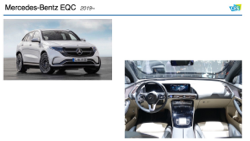
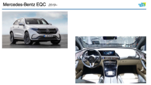

Overview
SAUVVI is a project funded by IIT / WISER Cross-Diciplinary Seed Funding Grants that aims to explore, create and test limited instructional cues visually presented on the display of such semi-autonomous vehicles.
Through the information and interaction design on display, we tried to intervene two diver actions, speed acceleration/deceleration and lane change, to encourage energy efficient driving.
Time
Jan.2020 ~ May.2020
(User test has been pending due to COVID)
Role
Industrial Expert who brings industry knowledge, competitive landscape, trend analysis and general information about electric & hybrid vehicles. Skilled in industry research.
Team Member
Kie Ichikawa
Noah Keppers
Subin Kim
Yun Yang
Yutian Sun


 
